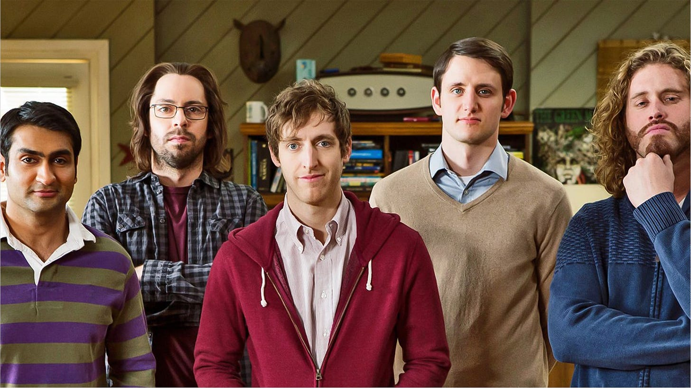
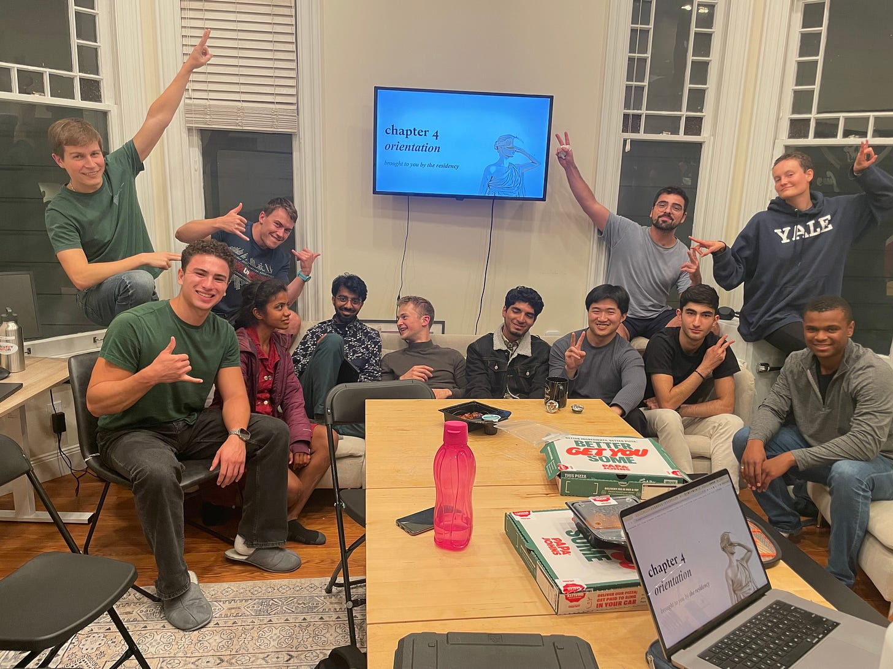
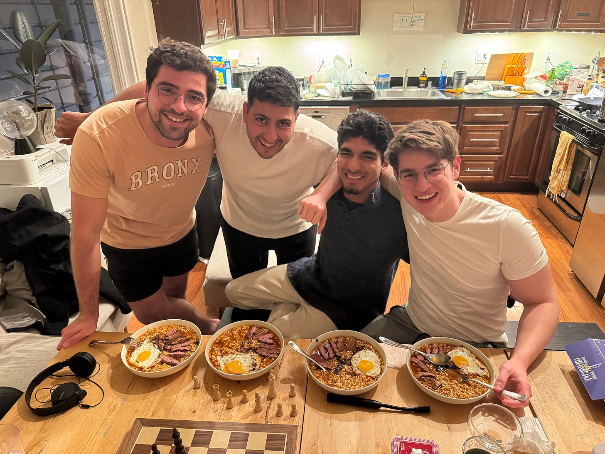
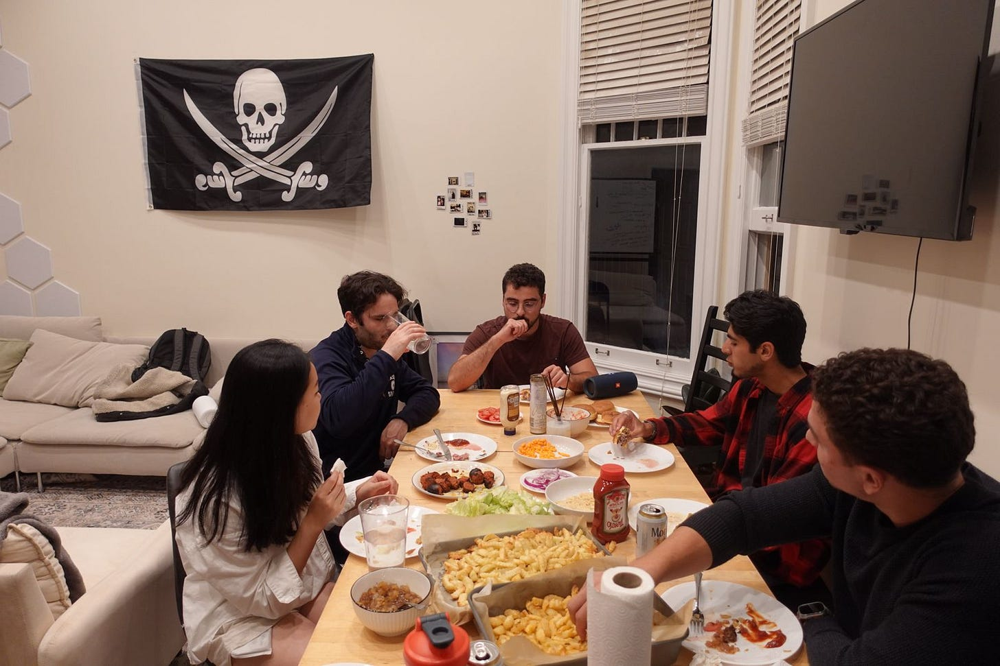
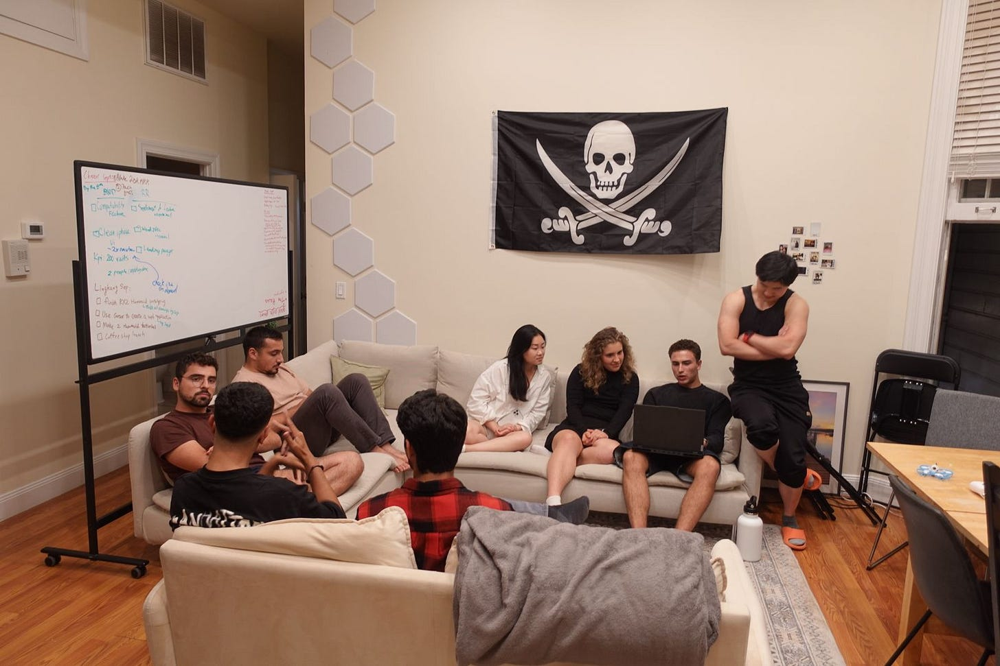

The Hacker House Show
a new format for a reality TV show
Reality TV has been part of our lives for decades. Growing up in Israel, my school friends would talk endlessly about these shows. When I moved to the UK, I experienced an even more intense version of that—with the recent (and awful) hit Too Hot to Handle. But honestly, I never really connected with that kind of programming. It always felt unproductive, kinda boring, and too focused on the worst parts of human nature.
There was one small exception—a reality show that caught my attention a bit more: Shark Tank. I thought watching entrepreneurs pitch their ideas was cool at first. But as I kept watching, I realized that Shark Tank only scratches the surface. Sure, there’s that burst of adrenaline during a pitch, but it never shows the messy, day-to-day grind behind building something great (something I experienced myself later on). The format offers quick, high-pressure moments, but it misses out on the depth of what really goes into creating a startup, and not because it is any less interesting and a good material for a tv show, no.
Then I discovered the HBO sitcom Silicon Valley. Now that was different. This show follows a group of founders living together in what called a “hacker house” (we will get to that in a moment), and it captures something real about the journey of starting a company. It isn’t just a series of dramatic pitches; it’s about the daily struggles and the little moments of building a company, in an intense, grinding house full of silicon valley ambitious minds. Those moments can be hilarious, emotionally engaging, and deeply involving. The day-to-day life it portrays isn’t just filler—it’s full of potential to be both entertaining and genuinely valuable for anyone watching.

Last year, almost out of nowhere, I decided to pack my bags and head to San Francisco. Before I knew it, I was living in a real-life Hacker House—a place that felt straight out of the sitcom I’d loved growing up. Suddenly, I wasn’t just watching a show about scrappy founders; I was one of them, sharing a house with more than ten other ambitious people, all working on their own startups. The late-night brainstorming sessions, the frantic pitch rehearsals, the endless working hours and the all-nighters before big launches—it was chaotic, intense, and exactly the kind of energy I’d always imagined.
As I settled into this new reality, I couldn’t help but think back to my teenage years in Israel. While my classmates were glued to reality TV shows full of gossip and drama, I was pulling solo all-nighters, trying to bring my big ideas to life. I longed for a culture that genuinely celebrated hustle—a place where being ambitious wouldn’t make me the odd one out. Suddenly, living in a Hacker House, it struck me that showcasing this environment in a reality show could spark the cultural shift I’d always hoped for. Instead of polished, 90-second pitches like on Shark Tank—or worse, shows that lock people in a house just to watch them fight—it would shine a light on the unfiltered, messy, and often hilarious process of actually building something from scratch. And maybe, just maybe, it would inspire the next kid who’s tired of feeling alone in their ambition.
And that’s how The Hacker House Show idea was born.
I want to blend the raw entrepreneurial spirit of Shark Tank with the authentic, day-to-day storytelling of Silicon Valley—not just for the founders who “get it,” but for anyone who’s ever felt that spark to create something amazing. Maybe this show will inspire the next young dreamer—someone sitting in Tel Aviv, Tokyo, or anywhere else—who just want someone to counter or even over-counter their own ambition. They’ll see it’s possible, it’s worth it, and most of all, they’re not alone in the craziness of chasing an idea that just might change everything.
San Francisco, 2024:



